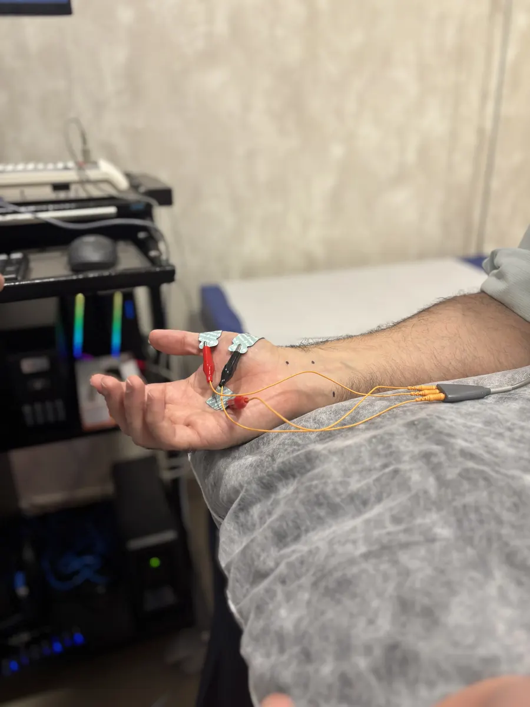
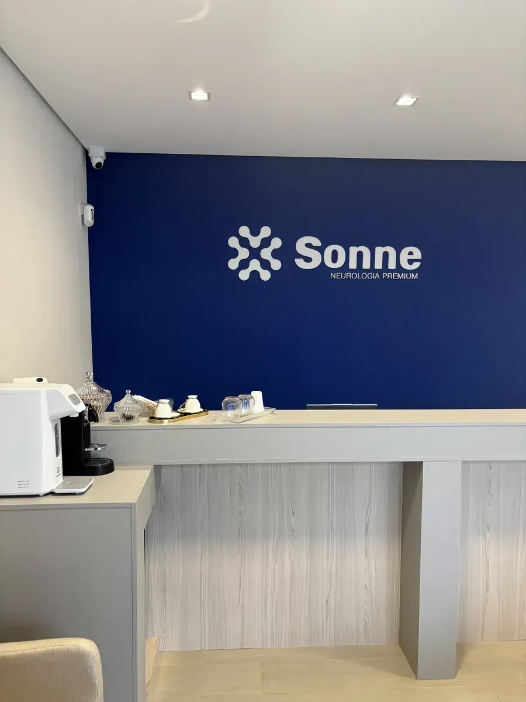

Membros superiores
Para pedidos de eletroneuromiografia dos membros superiores.
UNIMED · CAMPINAS E HORTOLÂNDIA
Faça sua eletroneuromiografia pela Unimed na Clínica Sonne. Escolha entre Campinas e Hortolândia e fale com a equipe para consultar horários e as condições de atendimento do seu plano.

SEU PEDIDO MÉDICO, NOSSO PONTO DE PARTIDA
A eletroneuromiografia, também chamada de ENMG, avalia a função dos nervos periféricos, dos músculos e da comunicação entre eles. O tipo de exame deve seguir a indicação do seu médico.
Seu pedido tem uma indicação específica?
Informe à equipe o exame solicitado para confirmar a
cobertura do seu plano Unimed e a disponibilidade na unidade
escolhida.
SEU EXAME PELA UNIMED
Do pedido médico à escolha do horário, a equipe Sonne orienta você para agendar sua eletroneuromiografia pela Unimed.
Quero agendar pela UnimedTenha o pedido médico e os dados da sua Unimed em mãos para informar o exame solicitado e a modalidade do plano.
Atendemos em Campinas e Hortolândia. A equipe confere as condições do seu plano e a disponibilidade para seu exame.
Confira com a equipe os documentos, a necessidade de autorização e o preparo específico para o exame.

UM POUCO DA NOSSA CLÍNICACONHEÇA A SONNE
Escolher onde fazer sua eletroneuromiografia também é saber com quem contar. Na Sonne, você encontra uma clínica dedicada à neurologia, com estrutura para exames e atendimento em Campinas e Hortolândia.
Informação antes de sair de casaConverse com a equipe sobre o exame, a unidade e as orientações para o dia do atendimento.
ONDE FAZER ELETRONEUROMIOGRAFIA
Atendimento de eletroneuromiografia pela Unimed em Campinas e Hortolândia. Escolha sua unidade e consulte os horários para o seu exame.
Taquaral · Edifício Medplex
Av. Barão de Itapura, 610 — Sala 510Remanso Campineiro
Rua João Blumer, 289ANTES DE AGENDAR
Não encontrou sua resposta? Nossa equipe pode orientar você pelo WhatsApp.
Falar com a equipeSim. Realizamos eletroneuromiografia pela Unimed nas unidades de Campinas e Hortolândia. Informe a modalidade do seu plano e o pedido médico para a equipe confirmar as condições de atendimento.
Sim. ENMG é a sigla de eletroneuromiografia. No pedido, também podem aparecer as siglas MMSS (membros superiores) e MMII (membros inferiores).
Use a indicação do seu pedido médico. Se houver dúvida sobre a descrição ou a região a ser avaliada, fale com a equipe antes de confirmar o agendamento.
Confirme com a equipe o preparo específico para o exame solicitado, os documentos necessários e as orientações para o dia do atendimento.
A exigência de autorização e os documentos dependem das condições do seu plano e do exame solicitado. Confirme essas informações com a equipe antes do atendimento.
Consulte essas informações no agendamento, de acordo com o tipo de exame solicitado. A equipe confirma a duração prevista e o prazo de entrega do laudo para o seu atendimento.
ELETRONEUROMIOGRAFIA PELA UNIMED
Fale com a equipe Sonne e consulte seu próximo horário em Campinas ou Hortolândia.